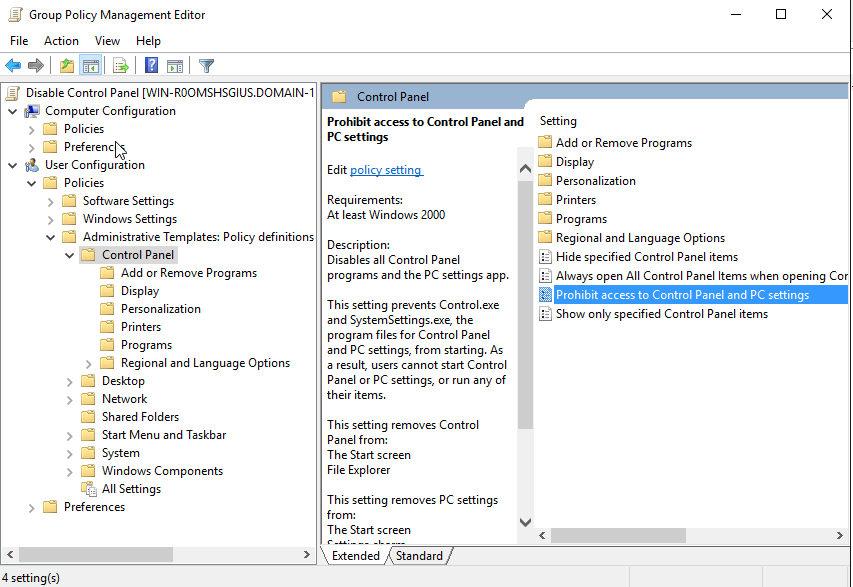
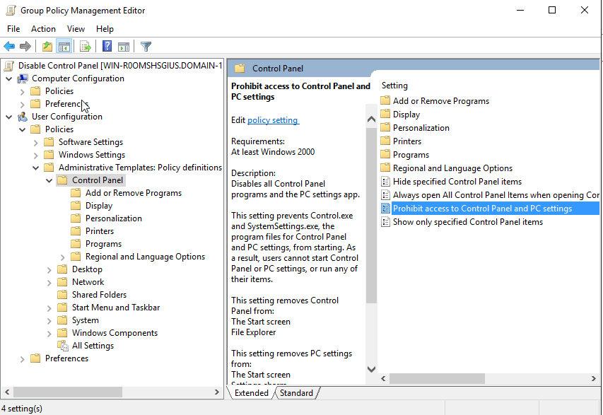

The following demonstration outlines how to set up basic GPOs and applying them to an Active Directory user and computer account.
Objective: Prevent users from accessing the Run dialog (Win + R), which can limit their ability to manually launch control panels, scripts, or unauthorized apps.
1. In Server Manager click on the Tools drop-down in the upper right, then select Group Policy Management.

2. In Group Policy Management Expand the Forest domain.

3. Right-click on the domain and select Create a GPO in this domain, and Link it here...

4. Enter in a name for the New GPO, then click Ok.

5. Right-click on the New GPO in Group Policy Management and select Edit.

6. Under User Configuration navigate to User Configuration > Policies > Administraive Templates > Start Menu and Taskbar, then select Remove Run menu from Start Menu.

7. Select Enabled, click Apply, then Ok.
Objective: Prevent a user from accessing the Control Panel and Settings on a Windows domain-joined computer
1. In Server Manager click on the Tools drop-down in the upper right, then select Group Policy Management.

2. Expand the Forest Domain on the leftt menu of Group Policy Management. Then right-click on the domain name to select "Create a GPO in this domain, and link it here.

3. Assign a name to the new GPO, then click Ok.

4. The new GPO will then be listed in the hierarchical stucture on the left. Right-click, the select Edit.

5. The Group Policy Management Editor window will come up. Navigate User Configuration > Policies > Administrative Template Policy definitions > Control Panel.

6. Click on Prohibit access to Control Panel and PC settings.
7. Click on Enabled to the left. Then click Ok.

One of the first GPO's that should be created upon spinning up a domain controller is setting the Active Directory User Account Lockout Policy.
1. In

2. In Group Policy Management Expand the Forest Domain on the left menu, then click Create a GPO in this domain, and link it here..

3. Name the New GPO Account Lockout Policy.
4. The new GPO will then be listed in the hierarchical structure on the left. Right-click, then select Edit.

5. The Group Policy Management Editor window will come up. Navigate to Computer Configuration > Policies > Windows Settings > Account Policies > Account Lockout Policy.

6. Click on Account lockout threshold to the right.

7. Configure the Account lockout threshold Properties. For this example, I'm setting the duration to 3, click Apply, the Ok.

Objective: Setting up a Custom Logon Message
1. Go back into Server Manager > Tools, then select Group Policy Management.
2. Right-click on Domain.1.microsoft.com domain entry under the forest hierarchy, and select Create a GPOin this domain and link it here....

3. This one will be named Custom Logon Message, then click Ok.

4. Right-click on the new created GPO and select Edit.
5. In Group Policy Management Editor, Under Computer Configuration navigate to Computer Configuration > Policies > Windows Settings > Security Settings > Local Policies > Security Options. Then select Interactive Logon: Message Title for users attempting to log on..

6. Set up the Message Title, then click Apply then Ok.
7.
Objective: Prevent all USB mass storage devices (e.g., flash drives) from working on domain-joined computers App via Group Policy (User Account GPO).
1. In Group Policy Editor navigate to Computer Configuration > Policies > Administrative Templates > System > Removable Storage Access. Then click-on All Removeable Storage classes: Deny all access.
2. Select Enabled then click Ok

1. Open Active Directory Users and Computersd (dsa.msc)

2. Navigate to the OU where you want the group stored.
3. Right-click on the OU > New > Group

4. Click Ok

Result: There's now a New Security Group in ADUC.
1. Double-click the group you just created
2. Go to the Members tab
3. Click Add, and select the users you want the GPO to apply to
4.Click Ok
Result: Those users are now group members
1. Open Group Policy Management (gpmc.msc)

2. Right-click the OU where the users reside in and select:
"Create a GPO in this domain, and Link it here..."
3. Name the GPO (e.g., Disable Control Panel
4. Right-click the new GPO > Edit, and configure your desired settings.
 

Result: GPO is created and linked
1. In Group Policy Management, select your new GPO

2. In the Scope tab, under Security Filtering:


Result: The GPO will now only apply to members of that group.
1. Still in GPMC, go to the Delegation tab of the GPO
2. Click Advanced

3. Confirm that group has these permissions
This method provides you with the precise control over who receives the GPO, using Security Groups instead of broad OU application.l
Back to Home